Test Preference (Savings Distribution), Test over Discount and Risk-Aversion Arrays (grid)
back to Fan's Dynamic Assets Repository Table of Content. cross test: given (x,y), vary x along X, y along Y, one at a time
@include
@seealso
- SPEED savings only overall benchmark speed testing: fsi_az_ds_vecsv_speed
- PREFERENCE savings only preference testing: fsi_az_ds_vecsv_pref
- PREFERENCE savings only preference testing CROSS: fsi_az_ds_vecsv_pref_cross
- PREFERENCE savings only preference testing GRID: fsi_az_ds_vecsv_pref_grid
- SHOCK savings only shock testing: fsi_az_ds_vecsv_shock
- SHOCK savings only shock testing CROSS: fsi_az_ds_vecsv_shock_cross
- SHOCK savings only shock testing GRID: fsi_az_ds_vecsv_shock_grid
- PRICE savings only wage and interest rate testing CROSS: adjust wage and savings rate fsi_az_ds_vecsv_price_cross
- JOINT all parameters random draws joint test fsi_az_ds_vecsv_joint_rand
Contents
Simulate and Graph
Note: as for example fl_beta increases, willingness to save increases, leading to higher savings, which will exceed the benchmark max grid point. So to allow for higher beta, dramatically higher max savings bound is needed.
% Set which to graph, simulate over which variables bl_simu_cross = 'g'; cl_st_param_keys = {'fl_crra', 'fl_beta'}; % Generate Benchmark Parameters it_param_set = 9; [param_map, support_map] = ffs_az_set_default_param(it_param_set); support_map('bl_replacefile') = false; support_map('bl_graph_onebyones') = true; support_map('bl_display_graph_stats') = false; % Generate Arrays of Parameter Values to Loop Over it_simu_vec_len = 10; param_tstar_map = containers.Map('KeyType','char', 'ValueType','any'); param_tstar_map('fl_crra') = linspace(1, 5, it_simu_vec_len); param_tstar_map('fl_beta') = linspace(0.87, 0.97, it_simu_vec_len);
Denser Simulation (All Graphs)
it_size_type = 2; ar_it_plot_sets = [51,52,54, 5,6,153, 61,62,10]; % Simulate along parameters [tb_outcomes, support_map] = ff_az_test_analyze( ... ar_it_plot_sets, bl_simu_cross, it_size_type, cl_st_param_keys, ... param_map, support_map, param_tstar_map); close all;
----------------------------------------
----------------------------------------
xxxxxxxxxxxxxxxxxxxxxxxxxxxxxxxxxxxxxxxx
xxxxxxxxxxxxxxxxxxxxxxxxxxxxxxxxxxxxxxxx
Begin: Show all key and value pairs from container
CONTAINER NAME: SUPPORT_MAP
----------------------------------------
Map with properties:
Count: 48
KeyType: char
ValueType: any
xxxxxxxxxxxxxxxxxxxxxxxxxxxxxxxxxxxxxxxx
xxxxxxxxxxxxxxxxxxxxxxxxxxxxxxxxxxxxxxxx
----------------------------------------
----------------------------------------
pos = 31 ; key = st_img_name_main ; val = _default
pos = 32 ; key = st_img_path ; val = C:/Users/fan/CodeDynaAsset//m_az//solve/img/
pos = 33 ; key = st_img_prefix ; val =
pos = 34 ; key = st_img_suffix ; val = _p9.png
pos = 35 ; key = st_mat_name_main ; val = _default
pos = 36 ; key = st_mat_path ; val = C:/Users/fan/CodeDynaAsset//m_az//solve/mat/
pos = 37 ; key = st_mat_prefix ; val =
pos = 38 ; key = st_mat_suffix ; val = _p9
pos = 39 ; key = st_mat_test_name_main ; val = r
pos = 40 ; key = st_mat_test_path ; val = C:/Users/fan/CodeDynaAsset//m_az//test/ff_az_ds_vecsv/mat/
pos = 41 ; key = st_mat_test_prefix ; val =
pos = 42 ; key = st_mat_test_suffix ; val = _g12_cg_t2l20
pos = 43 ; key = st_matimg_path_root ; val = C:/Users/fan/CodeDynaAsset//m_az/
pos = 44 ; key = st_profile_name_main ; val = _default
pos = 45 ; key = st_profile_path ; val = C:/Users/fan/CodeDynaAsset//m_az//solve/profile/
pos = 46 ; key = st_profile_prefix ; val =
pos = 47 ; key = st_profile_suffix ; val = _p9
pos = 48 ; key = st_title_prefix ; val =
----------------------------------------
xxxxxxxxxxxxxxxxxxxxxxxxxxxxxxxxxxxxxxxx
Scalars in Container and Sizes and Basic Statistics
xxxxxxxxxxxxxxxxxxxxxxxxxxxxxxxxxxxxxxxx
i idx value
__ ___ _____
bl_display 1 1 0
bl_display_defparam 2 2 0
bl_display_dist 3 3 0
bl_display_final 4 4 0
bl_display_final_dist 5 5 1
bl_display_final_dist_detail 6 6 0
bl_display_funcgrids 7 7 0
bl_display_graph_stats 8 8 0
bl_display_simu_stats 9 9 1
bl_graph 10 10 1
bl_graph_coh_t_coh 11 11 0
bl_graph_funcgrids 12 12 0
bl_graph_onebyones 13 13 1
bl_graph_pol_lvl 14 14 0
bl_graph_pol_pct 15 15 0
bl_graph_val 16 16 0
bl_img_save 17 17 0
bl_mat 18 18 0
bl_mat_test 19 19 1
bl_post 20 20 1
bl_profile 21 21 0
bl_profile_dist 22 22 0
bl_replacefile 23 23 0
bl_time 24 24 0
bl_timer 25 25 1
it_display_every 26 26 20
it_display_final_colmax 27 27 12
it_display_final_rowmax 28 28 100
it_display_summmat_colmax 29 29 5
it_display_summmat_rowmax 30 30 5
----------------------------------------
----------------------------------------
xxxxxxxxxxxxxxxxxxxxxxxxxxxxxxxxxxxxxxxx
xxxxxxxxxxxxxxxxxxxxxxxxxxxxxxxxxxxxxxxx
Begin: Show all key and value pairs from container
CONTAINER NAME: PARAM_MAP
----------------------------------------
Map with properties:
Count: 29
KeyType: char
ValueType: any
xxxxxxxxxxxxxxxxxxxxxxxxxxxxxxxxxxxxxxxx
xxxxxxxxxxxxxxxxxxxxxxxxxxxxxxxxxxxxxxxx
----------------------------------------
----------------------------------------
pos = 3 ; key = cl_st_param_keys ; val = fl_crra
pos = 28 ; key = st_analytical_stationary_type ; val = eigenvector
pos = 29 ; key = st_model ; val = az
----------------------------------------
xxxxxxxxxxxxxxxxxxxxxxxxxxxxxxxxxxxxxxxx
Matrix in Container and Sizes and Basic Statistics
xxxxxxxxxxxxxxxxxxxxxxxxxxxxxxxxxxxxxxxx
i idx rowN colN mean std min max
_ ___ ____ ____ ____ _______ ___ ___
ar_param_keys_idx 1 1 1 2 1.5 0.70711 1 2
----------------------------------------
xxxxxxxxxxxxxxxxxxxxxxxxxxxxxxxxxxxxxxxx
Scalars in Container and Sizes and Basic Statistics
xxxxxxxxxxxxxxxxxxxxxxxxxxxxxxxxxxxxxxxx
i idx value
__ ___ _____
bl_loglin 1 2 0
fl_a_max 2 4 50
fl_a_min 3 5 0
fl_b_bd 4 6 0
fl_beta 5 7 0.94
fl_crra 6 8 1.5
fl_loglin_threshold 7 9 1
fl_nan_replace 8 10 -9999
fl_r_save 9 11 0.025
fl_tol_dist 10 12 1e-05
fl_tol_pol 11 13 1e-05
fl_tol_val 12 14 1e-05
fl_w 13 15 1.28
fl_z_mu 14 16 0
fl_z_rho 15 17 0.8
fl_z_sig 16 18 0.2
it_a_n 17 19 750
it_maxiter_dist 18 20 1000
it_maxiter_val 19 21 1000
it_size_type 20 22 2
it_st_simu_type_g_seed 21 23 123
it_st_simu_type_g_simun 22 24 20
it_tol_pol_nochange 23 25 25
it_trans_power_dist 24 26 1000
it_z_n 25 27 15
----------------------------------------
----------------------------------------
xxxxxxxxxxxxxxxxxxxxxxxxxxxxxxxxxxxxxxxx
xxxxxxxxxxxxxxxxxxxxxxxxxxxxxxxxxxxxxxxx
Begin: Show all key and value pairs from container
CONTAINER NAME: PARAM_TSTAR_MAP
----------------------------------------
Map with properties:
Count: 19
KeyType: char
ValueType: any
xxxxxxxxxxxxxxxxxxxxxxxxxxxxxxxxxxxxxxxx
xxxxxxxxxxxxxxxxxxxxxxxxxxxxxxxxxxxxxxxx
----------------------------------------
----------------------------------------
----------------------------------------
xxxxxxxxxxxxxxxxxxxxxxxxxxxxxxxxxxxxxxxx
Matrix in Container and Sizes and Basic Statistics
xxxxxxxxxxxxxxxxxxxxxxxxxxxxxxxxxxxxxxxx
i idx rowN colN mean std min max
__ ___ ____ ____ ______ ________ _____ ____
fl_a_max 1 1 1 5 65 11.859 50 80
fl_alpha 2 2 1 5 0.4 0.079057 0.3 0.5
fl_b_bd 3 3 1 5 -12.5 5.9293 -20 -5
fl_beta 4 4 1 10 0.92 0.033641 0.87 0.97
fl_c_min 5 5 1 5 0.0155 0.011463 0.001 0.03
fl_crra 6 6 1 10 3 1.3456 1 5
fl_delta 7 7 1 5 0.08 0.047434 0.02 0.14
fl_r_borr 8 8 1 5 0.125 0.098821 0 0.25
fl_r_save 9 9 1 5 0.025 0.011859 0.01 0.04
fl_w 10 10 1 5 1.25 0.11859 1.1 1.4
fl_z_r_borr_max 11 11 1 5 0.1225 0.021741 0.095 0.15
fl_z_r_borr_n 12 12 1 6 15 7.4833 5 25
fl_z_r_borr_poiss_mean 13 13 1 5 12.5 5.9293 5 20
fl_z_rho 14 14 1 5 0.495 0.39133 0 0.99
fl_z_sig 15 15 1 5 0.255 0.19369 0.01 0.5
fl_z_wage_rho 16 16 1 5 0.495 0.39133 0 0.99
fl_z_wage_sig 17 17 1 5 0.255 0.19369 0.01 0.5
it_a_n 18 18 1 5 1300 948.68 100 2500
it_z_n 19 19 1 5 15 7.9057 5 25
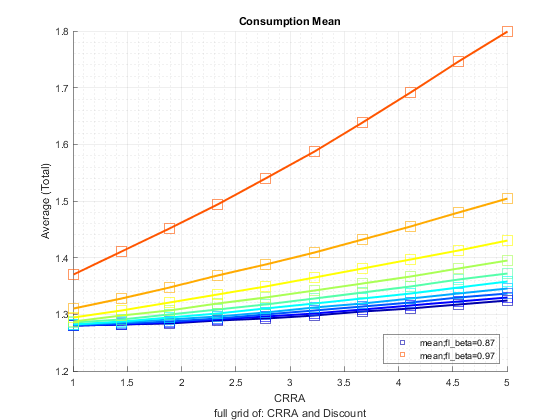 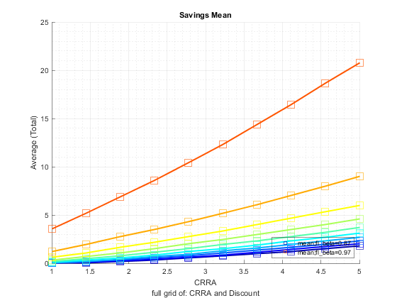 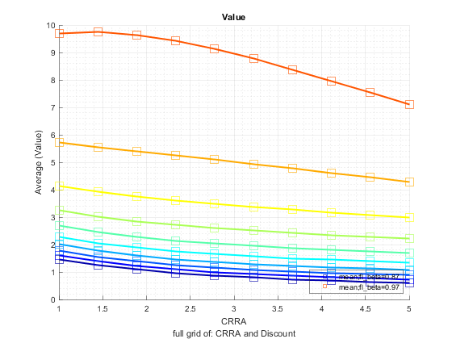 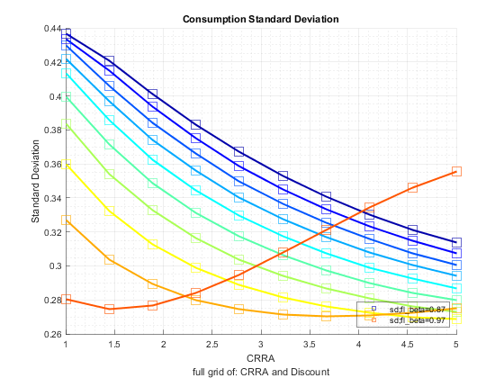 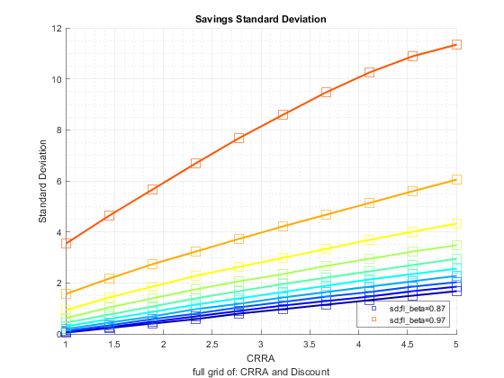 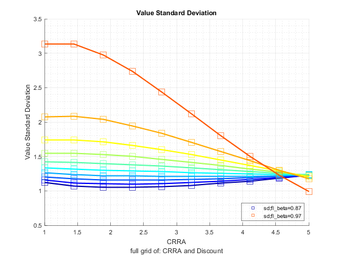 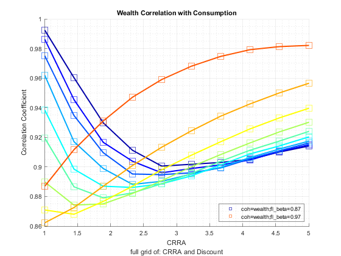 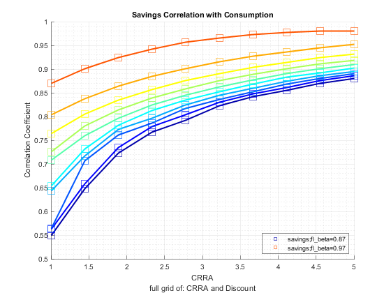 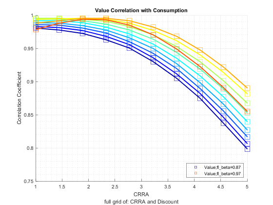 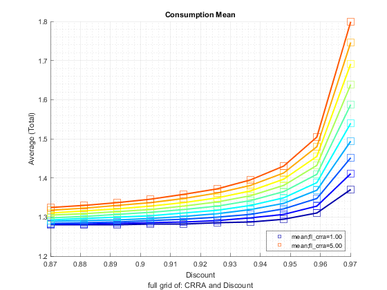 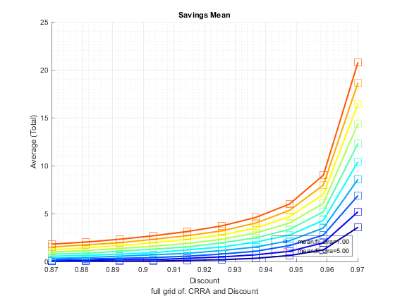 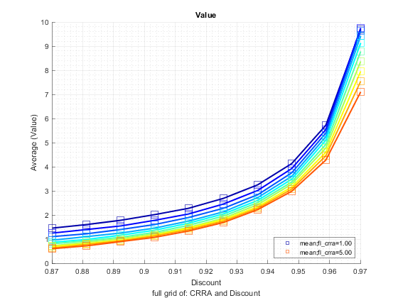 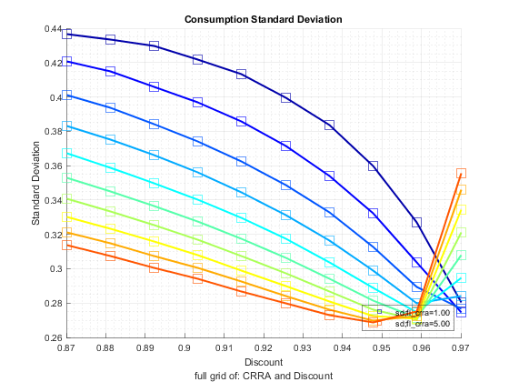 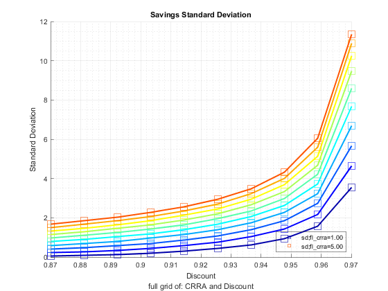 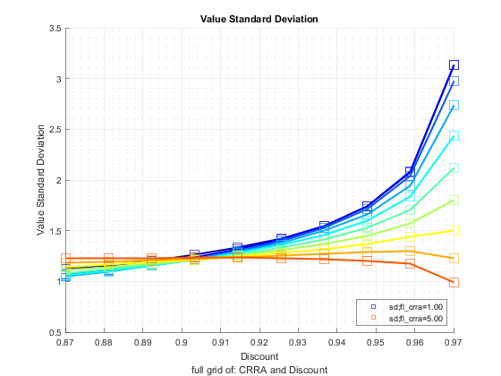 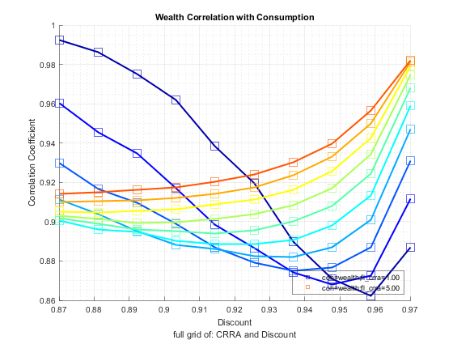 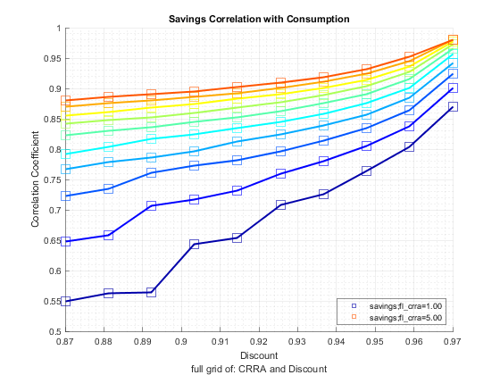 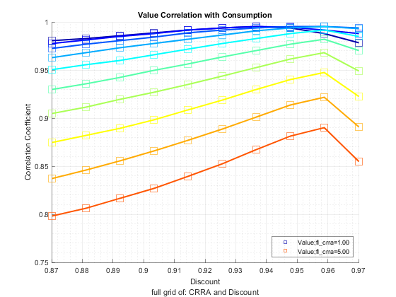